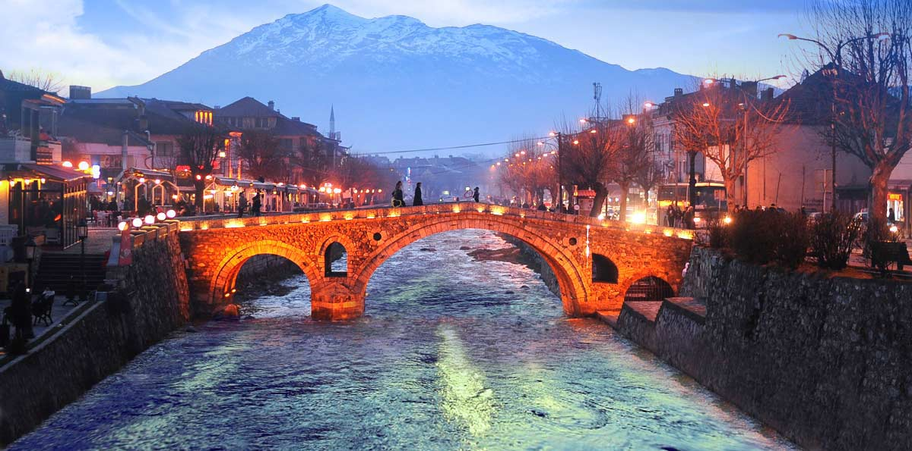

MERSIN
Mersin is the city where I was born.
It is a large city and port on the Mediterranean coast in southern Turkey.
I lived here until I went to college. My family still lives there, and I love Mersin.
There's no cold winter , it doesn't snow and it has a great sea to swim in, so I spent a great time in this city where I lived as a child.
ISTANBUL
Formerly known as Byzantium and Constantinople, Istanbul is Turkey's most populous city and the country's economic, cultural and historical center.
It is city with 700 years of Ottoman history and Roman empires.
There are many palaces, mosques, churches and historical sites in Istanbul.
In addition, Istanbul has the best universities in the country. My biggest dream in those years was to study at a University in Istanbul.
MARMARA UNIVERSITY
After taking the exam, I earned the Mathematics Department of Marmara University, which was my first choice.
It was a big event for me, my dream was realized.
But, the lessons at the University were very difficult, especially the professors in the Mathematics Department always pushed the students.
It is very thankfully that I was able to graduate in 4 years, it usually takes very long years to graduate.
AFTER GRADUATING
After graduating in 2008, I began my career as a math teacher.
My teaching experience was as difficult as it was beautiful.Most students did not like math, and sometimes it was difficult to teach.
But, I learned a lot in my teaching years such as patient, listening, understanding, accepting different ideas, and embracing different lives.
KOSOVA
As a result of some political events that have changed in my country, we have had to leave our country.
We had to wait for the visa process to get to United States.
But we spent the waiting period in Kosovo ,because our freedom was under threat.
Kosovo is a quiet , small, beautiful country.
It's very cold, and the winters are very long. The snow doesn't melt much until almost spring.
I learned a little Albanian when I lived there, but now I've completely forgotten.

ST LOUIS
Eventually, after coming to the United States, we settled in St.Louis.
Evertyhing looked so different in first years.I guess I am used to it now.
But, I am still learning new things everyday.
St.Louis is a quite city compared to istanbul.
Museums, Botanical Gardens and Arch are beautful places.
Everything looks beautiful, but I still miss sitting in a place with a view of the Bosphoros by the sea in Istanbul and watch the city.
I hope one day I will witness the times when freedom and democracy are experienced in my country.